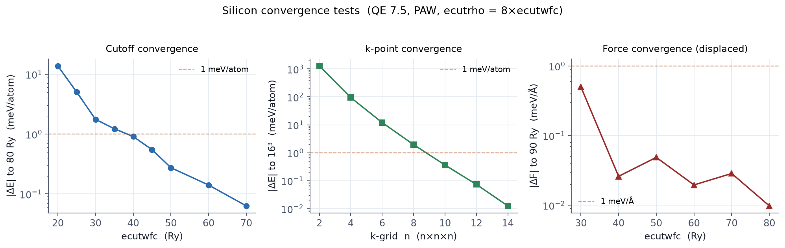

Goal
This is where QE skill forks. Learn the standard procedure of scripted
convergence tests for ecutwfc, the k-grid, and forces, including the habit
of judging in meV/atom and meV/Å. Background in
Chapter 05.
New here
| Item | Role |
|---|---|
Deriving inputs with sed |
One reference input generates the whole scan |
grep '^!' |
Extracts only the converged total energies |
| meV/atom conversion | ΔE × 13605.7 / nat |
Input files
The reference input is the same as E1 (si.scf.in).
conv_ecut.sh · conv_kpts.sh · conv_force.sh
#!/bin/bash
# conv_ecut.sh: ecutwfc scan; ecutrho follows at 8x (PAW/US convention)
NAT=2
printf "# ecutwfc(Ry) E_total(Ry) dE_vs_last(meV/atom)\n" > conv_ecut.dat
LAST=""
for E in 20 25 30 35 40 45 50 60 70 80; do
sed -e "s/ecutwfc *=.*/ecutwfc = $E/" \
-e "s/ecutrho *=.*/ecutrho = $((E*8))/" si.scf.in > tmp_e$E.in
pw.x -in tmp_e$E.in > tmp_e$E.out
EN=$(grep '^!' tmp_e$E.out | tail -1 | awk '{print $5}')
echo "$E $EN" >> conv_ecut.dat
LAST=$EN
done
awk -v nat=$NAT -v ref="$LAST" '!/^#/{printf "%6s %16s %10.3f\n",$1,$2,($2-ref)*13605.7/nat}' conv_ecut.dat
The k-point scan (conv_kpts.sh) rewrites the K_POINTS line the same
way. The force scan (conv_force.sh) breaks the symmetry (moving one Si
from 0.25 to 0.26) and extracts the force on atom 1.
Run
bash conv_ecut.sh
bash conv_kpts.sh > conv_kpts.dat
bash conv_force.sh > conv_force.dat
Output and figure: measured

The verdict in numbers (reference: the densest scan point):
| ecutwfc | ΔE (meV/atom) | k-grid | ΔE (meV/atom) | |
|---|---|---|---|---|
| 20 | 13.72 | 2³ | 1279 | |
| 25 | 5.03 | 4³ | 94.2 | |
| 30 | 1.76 | 6³ | 12.0 | |
| 40 | 0.91 | 8³ | 1.95 | |
| 50 | 0.27 | 10³ | 0.36 | |
| 60 | 0.14 | 12³ | 0.073 |
- Against a 1 meV/atom criterion, the passing line is around ecutwfc 40 Ry with a 10×10×10 grid. The 30 Ry / 8³ of E1 was a provisional teaching value.
- The force on the distorted structure (Fx ≈ 0.0288 Ry/bohr = 0.741 eV/Å) moves by 0.5 meV/Å between 30 and 40 Ry, then stays within 0.03 meV/Å. For ML training data, judge with this force criterion (~1 meV/Å).
Exercises
- Repeat the scan with
ecutrhopinned at 4x and watch what PAW does (the trap of Chapter 04). - Compare the cutoff at which the energy converges with the cutoff at which the force converges. Which is higher?
- Write your own Python script to plot the scans (the one used for this
guide is in the repository at
.build/plot_qe.py).
Extracting forces with
grep 'atom 1 ... force' | tail -1. The
last match is not the total force; it is the SCF
correction term (~10⁻⁶) from the contribution breakdown further down
the output. The total force is the first match after
Forces acting on atoms. We fell into exactly this hole
when first measuring this example; the script above is the corrected
version.